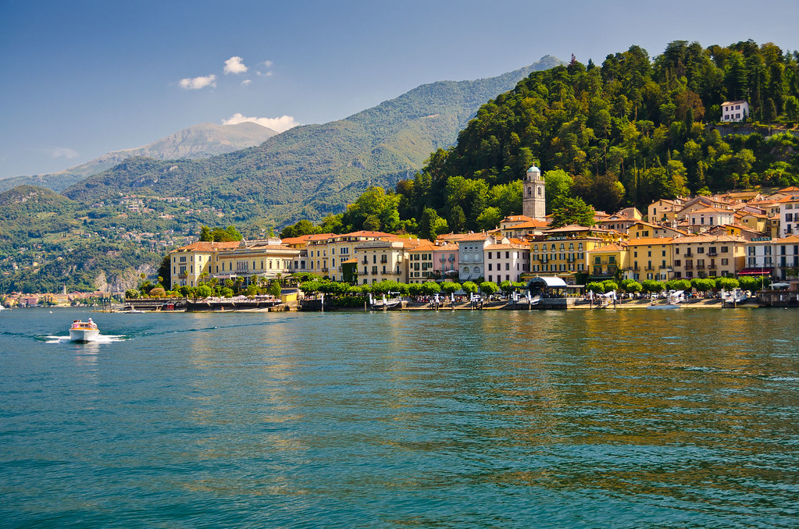
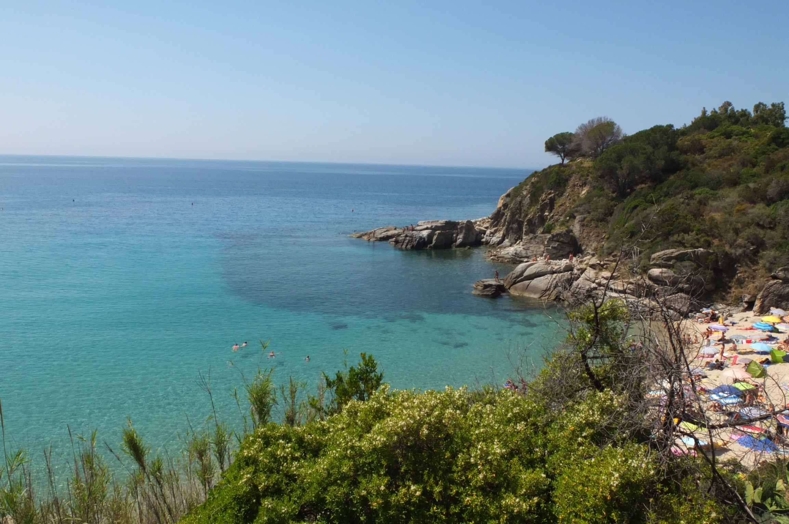

Italy is a beautiful country that borders the mediterranean sea. Italian food consists of pizza, pasta, and many other delicious foods. Italian food has become very popular in recent years. Rome, Florence, and Venice are some very popular cities in Italy. Soccer is a very popular sport in Italy with their top league being called Serie A. Look below for some more information on Italy!
|  |
Lake Como is a beautiful lake that is located at the foot of the Italian Alps. It offers some of the most romantic and picturesque sceneries in the world. While here, you can visit Bellagio, Como City, or Barena. Enjoy the various water excursions and boating opportunities through the lake's scenery. |
|  |
Cavoli Beach is a stunning beach located on the Italian island Elba. Enjoy relaxing on this picturesque beach as you watch the beautiful scenery. Beach parties are very common. |

|
The Colosseum is an oval amphitheater in the center of the city of Rome. It is the largest ancient amphitheater ever. Enjoy viewing this stunning architectural masterpiece. |